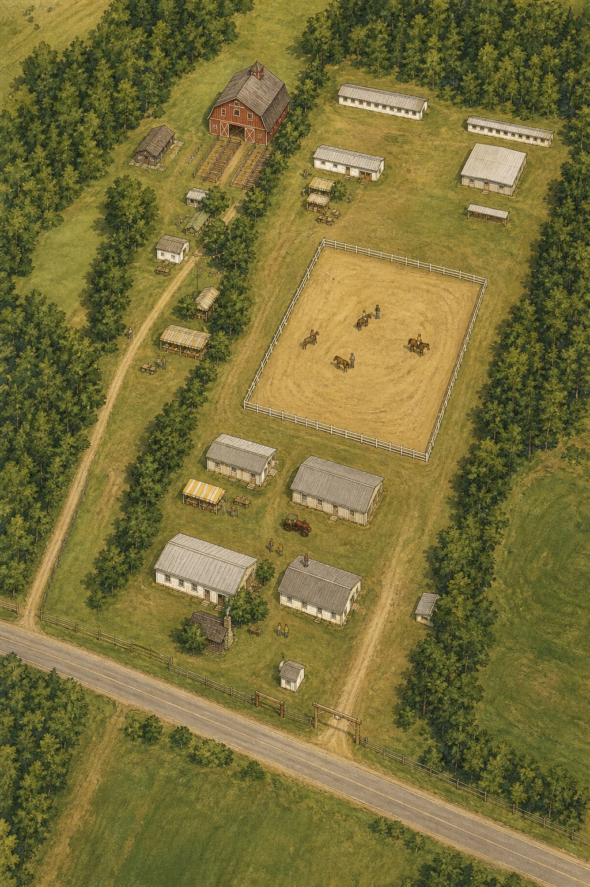

Est. 1871 · Haut-Saint-Laurent, Québec
Directions
Find us in the heart of the Haut-Saint-Laurent region
Find us in the heart of the Haut-Saint-Laurent region
Minutes from the Canada–US border
Find your way around the Havelock Fairgrounds

Select a location for details and what is on there today.
Free parking is available on the fairgrounds. Overflow parking with signage along Route 202. Follow the volunteer attendants on arrival.
Accessible parking near the main entrance. The fairgrounds are mostly flat and grass. Portable washrooms are available on site.
Call us for directions or information:
(450) 826-1155
The Havelock Fairgrounds are just minutes from the Lacolle / Champlain border crossing (I-87 / Autoroute 15). If travelling from the United States, remember to bring valid identification (passport or enhanced driver's licence). Allow extra time for customs during peak weekends.